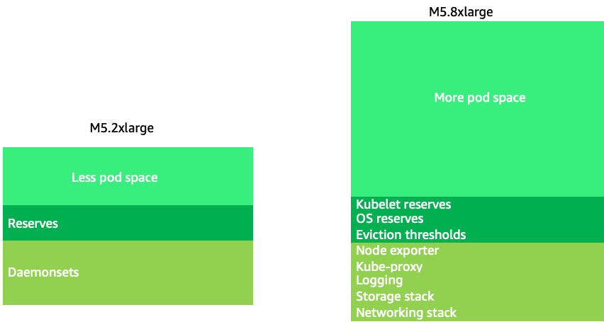
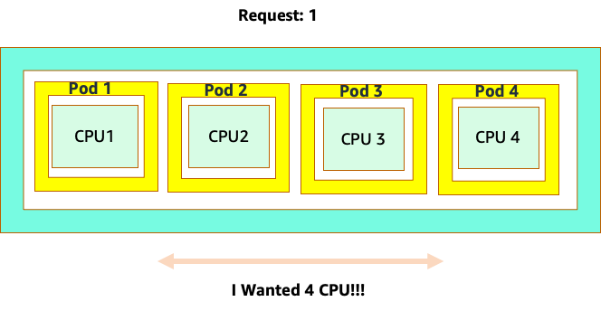
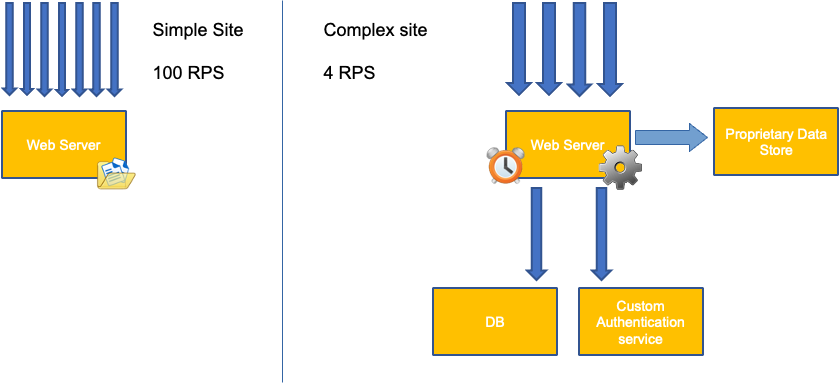
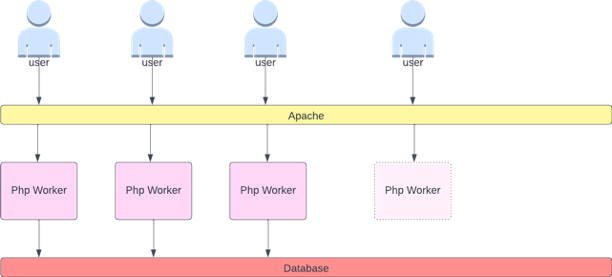
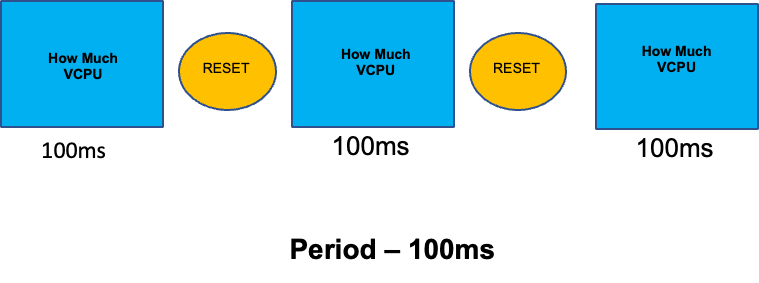

节点和工作负载效率¶
提高工作负载和节点的效率可以降低复杂性/成本，同时提高性能和扩展能力。在规划这种效率时，需要考虑许多因素，将其视为权衡取舍而非每个特性的最佳实践设置会更容易理解。让我们在下一节深入探讨这些权衡。
节点选择¶
使用稍大的节点大小(4-12xlarge)会增加可用于运行 Pod 的空间，因为它减少了用于"开销"的节点百分比，例如 DaemonSets 和为系统组件保留的 Reserves。在下图中，我们看到了在只有适度数量 DaemonSets 的情况下，2xlarge 与 8xlarge 系统的可用空间之间的差异。
Note
由于 k8s 通常是水平扩展，因此对于大多数应用程序，采用 NUMA 大小节点会带来性能影响，因此下面的建议范围低于该节点大小。

较大的节点大小使我们能够在每个节点上拥有更高百分比的可用空间。但是，如果将节点填满太多 Pod 导致错误或使节点饱和，这种模式也可能走向极端。监控节点饱和是成功使用较大节点大小的关键。
节点选择很少是一刀切的。通常最好将周转率极端不同的工作负载分割到不同的节点组。具有高周转率的小批量工作负载最适合 4xlarge 系列实例，而像 Kafka 这样大规模应用程序占用 8 vCPU 且周转率低，则更适合 12xlarge 系列。

Tip
对于非常大的节点大小，另一个需要考虑的因素是，由于 CGROUPS 不会隐藏容器化应用程序的总 vCPU 数量，动态运行时可能会产生意外数量的操作系统线程，从而导致难以排查的延迟。对于这些应用程序，建议 CPU 绑定。要深入探讨此主题，请参阅以下视频 https://www.youtube.com/watch?v=NqtfDy_KAqg
节点装箱¶
Kubernetes 与 Linux 规则¶
在处理 Kubernetes 上的工作负载时，我们需要注意两组规则。Kubernetes 调度程序使用请求值来在节点上调度 Pod 的规则，以及 Pod 调度后发生的情况，这属于 Linux 而非 Kubernetes 的范畴。
在 Kubernetes 调度程序完成后，一组新的规则开始生效，即 Linux 完全公平调度程序 (CFS)。关键点是 Linux CFS 没有核心的概念。我们将讨论为什么以核心思考会导致优化工作负载扩展能力的重大问题。
以核心思考¶
混淆的起源在于 Kubernetes 调度程序确实有核心的概念。从 Kubernetes 调度程序的角度来看，如果我们查看一个节点上有 4 个 NGINX Pod，每个请求一个核心，节点看起来就像这样。

但是，让我们从 Linux CFS 的角度进行思考实验。使用 Linux CFS 系统时最重要的是：只有繁忙的容器 (CGROUPS) 才会计入共享系统。在这种情况下，只有第一个容器繁忙，因此它可以使用节点上的所有 4 个核心。

为什么这很重要？假设我们在开发集群中运行性能测试，在该集群中 NGINX 应用程序是该节点上唯一繁忙的容器。当我们将应用程序移至生产环境时，会发生以下情况：NGINX 应用程序需要 4 个 vCPU 资源，但由于节点上的所有其他 Pod 都很繁忙，因此我们应用程序的性能受到限制。

这种情况会导致我们不必要地添加更多容器，因为我们没有让应用程序扩展到其"最佳点"。让我们更详细地探讨这个重要的"最佳点"概念。
应用程序适当调整大小¶
每个应用程序都有一个无法再处理更多流量的点。超过这个点会增加处理时间，甚至在远远超过这个点时会丢弃流量。这就是应用程序的饱和点。为了避免扩展问题，我们应该尝试在应用程序达到饱和点之前进行扩展。让我们称这个点为最佳点。

我们需要测试每个应用程序以了解其最佳点。这里没有通用指导，因为每个应用程序都不同。在此测试过程中，我们试图了解最能显示应用程序饱和点的最佳指标。通常，利用率指标用于指示应用程序饱和，但这可能很快导致扩展问题(我们将在后面的部分详细探讨这个主题)。一旦确定了这个"最佳点",我们就可以使用它来有效扩展工作负载。
相反，如果我们在最佳点之前就大规模扩展并创建了不必要的 Pod，会发生什么？让我们在下一节探讨这个问题。
Pod 扩散¶
为了了解创建不必要的 Pod 如何迅速失控，让我们看左边的第一个示例。当处理每秒 100 个请求时，此容器的正确垂直扩展大约占用两个 vCPU 的利用率。但是，如果我们将请求值设置为半个核心而低估了，我们现在需要为每个实际需要的 Pod 创建 4 个 Pod。进一步加剧这个问题的是，如果我们的 HPA 设置为默认的 50% CPU,那些 Pod 将以一半的空闲状态进行扩展，从而创建 8：1 的比率。

扩大这个问题，我们很快就会看到它是如何失控的。如果十个 Pod 的部署的最佳点设置不正确，很快就会激增到 80 个 Pod 以及运行它们所需的额外基础设施。

现在我们了解了不让应用程序在其最佳点运行的影响，让我们回到节点级别，问一问为什么 Kubernetes 调度程序和 Linux CFS 之间的这种差异如此重要？
在使用 HPA 进行扩展时，我们可能会遇到有大量空间可以分配更多 Pod 的情况。这将是一个糟糕的决定，因为左侧所示的节点已经达到 100% CPU 利用率。在一种不切实际但理论上可能的极端情况下，我们可能会遇到另一种极端情况，即我们的节点完全满载，但 CPU 利用率为零。

设置请求¶
很容易将请求值设置为该应用程序的"最佳点"值，但这会导致下图所示的效率低下。在这里，我们将请求值设置为 2 个 vCPU，但这些 Pod 的平均利用率大多数时候只有 1 个 CPU。这种设置会导致我们浪费 50% 的 CPU 周期，这是不可接受的。

这就引出了这个问题的复杂答案。容器利用率不能被孤立地考虑;必须将节点上运行的其他应用程序考虑在内。在下面的示例中，突发性 CPU 利用率较高的容器与两个 CPU 利用率较低但可能受内存限制的容器混合在一起。这样，我们就允许容器达到其最佳点，而不会使节点过载。

需要牢记的重要概念是，使用 Kubernetes 调度程序的核心概念来理解 Linux 容器性能可能会导致错误的决策，因为它们并不相关。
Tip
Linux CFS 有其强大之处，尤其是对于 I/O 密集型工作负载。但是，如果您的应用程序使用全核心而没有 sidecar，并且没有 I/O 要求，CPU 绑定可以大大简化此过程，并且在有这些警告的情况下是鼓励的。
利用率与饱和度¶
应用程序扩展中的一个常见错误是仅使用 CPU 利用率作为扩展指标。在复杂的应用程序中，这几乎总是一个糟糕的指标，无法准确反映应用程序是否真正达到了请求饱和。在左侧的示例中，我们看到所有请求实际上都击中了 Web 服务器，因此 CPU 利用率与饱和度一致。
在现实世界的应用程序中，很可能有一些请求将由数据库层或身份验证层等服务。在这种更常见的情况下，请注意 CPU 并未与饱和度保持一致，因为请求正在由其他实体服务。在这种情况下，CPU 是一个非常糟糕的饱和度指标。

在应用程序性能中使用错误的指标是 Kubernetes 中不必要和不可预测扩展的首要原因。在选择正确的饱和度指标方面必须非常小心。重要的是要注意，我们无法给出一刀切的建议。根据所使用的语言和应用程序类型的不同，饱和度指标各不相同。
我们可能认为这个问题只存在于 CPU 利用率，但其他常见指标如每秒请求数也可能遇到完全相同的问题。请注意，请求也可能会进入数据库层、身份验证层，而不是直接由我们的 Web 服务器服务，因此它是 Web 服务器本身真正饱和度的一个糟糕指标。

不幸的是，在选择正确的饱和度指标时没有简单的答案。以下是一些需要考虑的指导原则：
- 了解您的语言运行时 - 具有多个操作系统线程的语言与单线程应用程序的反应不同，因此对节点的影响也不同。
- 了解正确的垂直扩展 - 在扩展新 Pod 之前，您希望在应用程序的垂直扩展中保留多少缓冲区？
- 哪些指标真正反映了您应用程序的饱和度 - Kafka 生产者的饱和度指标与复杂 Web 应用程序的指标会有很大不同。
- 节点上的所有其他应用程序如何相互影响 - 应用程序性能不是在真空中进行的，节点上的其他工作负载会产生重大影响。
结束本节时，很容易认为上述内容过于复杂和不必要。通常情况下，我们可能会遇到问题，但由于查看的指标错误，我们无法了解问题的真正本质。在下一节中，我们将看到这可能会发生什么情况。
节点饱和度¶
现在我们已经探讨了应用程序饱和度，让我们从节点的角度来看这个概念。让我们看看两个 100% 利用的 vCPU 在利用率与饱和度方面的区别。
左侧的 vCPU 100% 利用，但没有其他任务等待在该 vCPU 上运行，因此从纯理论上讲，这是相当高效的。同时，在第二个示例中，我们有 20 个单线程应用程序等待由 vCPU 处理。现在所有 20 个应用程序在等待轮到由 vCPU 处理时都会经历某种延迟。换句话说，右侧的 vCPU 已经饱和。
如果我们只查看利用率，我们不仅无法看到这个问题，而且可能会将这种延迟归因于与网络无关的其他原因，从而导致我们走错方向。

在任何给定时间增加节点上运行的 Pod 总数时，查看饱和度指标而不仅仅是利用率指标很重要，因为我们很容易忽视已经过度饱和节点的事实。为此，我们可以使用压力停滞信息指标，如下图所示。
PromQL - 停滞的 I/O

Note
有关压力停滞指标的更多信息，请参阅 https://facebookmicrosites.github.io/psi/docs/overview*
使用这些指标，我们可以了解实例上所有线程正在等待 CPU 或每个线程都在等待诸如内存或 I/O 之类的资源。例如，我们可以看到在 1 分钟的时间内，实例上每个线程停滞等待 I/O 的百分比。
使用此指标，我们可以在上图中看到，在高峰时期，实例上的每个线程都有 45% 的时间在等待 I/O,这意味着我们在那一分钟内浪费了所有这些 CPU 周期。了解这一点可以帮助我们重新利用大量 vCPU 时间，从而使扩展更加高效。
HPA V2¶
建议使用 autoscaling/v2 版本的 HPA API。旧版本的 HPA API 在某些边缘情况下可能会陷入扩展困境。它还限制了 Pod 在每个扩展步骤中最多只能加倍，这为需要快速扩展的小型部署带来了问题。
Autoscaling/v2 允许我们更灵活地包含多个扩展标准，并在使用自定义和外部指标(非 K8s 指标)时提供更大的灵活性。
例如，我们可以根据三个值中的最高值进行扩展(见下文)。如果所有 Pod 的平均利用率超过 50%,或者自定义指标的入口每秒数据包超过平均 1，000 个，或者入口对象超过每秒 10K 个请求，我们就会进行扩展。
Note
这只是为了展示自动扩展 API 的灵活性，我们不建议使用过于复杂的规则，因为这些规则在生产环境中很难排查故障。
apiVersion: autoscaling/v2
kind: HorizontalPodAutoscaler
metadata:
name: php-apache
spec:
scaleTargetRef:
apiVersion: apps/v1
kind: Deployment
name: php-apache
minReplicas: 1
maxReplicas: 10
metrics:
- type: Resource
resource:
name: cpu
target:
type: Utilization
averageUtilization: 50
- type: Pods
pods:
metric:
name: packets-per-second
target:
type: AverageValue
averageValue: 1k
- type: Object
object:
metric:
name: requests-per-second
describedObject:
apiVersion: networking.k8s.io/v1
kind: Ingress
name: main-route
target:
type: Value
value: 10k
但是，我们了解到对于复杂的 Web 应用程序使用这种指标的危险性。在这种情况下，我们最好使用准确反映应用程序饱和度而非利用率的自定义或外部指标。HPAv2 通过能够根据任何指标进行扩展来支持这一点，但我们仍需要找到并将该指标导出到 Kubernetes 供使用。
例如，我们可以查看 Apache 中的活动线程队列计数。这通常会创建一个"更平滑"的扩展配置文件(稍后会详细介绍这个术语)。如果一个线程处于活动状态，无论该线程是在等待数据库层还是在本地服务请求，只要应用程序的所有线程都在使用，就是应用程序饱和的一个很好的指示。
我们可以使用这种线程耗尽作为创建新 Pod 的信号，新 Pod 具有完全可用的线程池。这也使我们能够控制在扩展应用程序时希望保留多大的缓冲区来吸收高流量期间的流量。例如，如果我们的总线程池为 10，在 4 个线程使用时扩展与在 8 个线程使用时扩展会对我们在扩展应用程序时可用的缓冲区产生重大影响。设置为 4 将适合需要在高负载下快速扩展的应用程序，而设置为 8 则更适合在请求数量缓慢而非急剧增加的情况下，以更高效地利用我们的资源。

我们所说的"平滑"扩展是什么意思？请注意下图，我们使用 CPU 作为指标。此部署中的 Pod 在短时间内从 50 个一直激增到 250 个，然后立即再次缩减。这种扩展非常低效，是集群周转的主要原因。

请注意，在我们将指标更改为反映应用程序正确最佳点后(图表中部)，我们能够平滑扩展。我们的扩展现在是高效的，我们通过调整请求设置允许 Pod 完全扩展，并提供了余量。现在，一小组 Pod 正在完成之前数百个 Pod 所做的工作。实际数据表明，这是 Kubernetes 集群可扩展性的关键因素。

关键要点是 CPU 利用率只是应用程序和节点性能的一个维度。仅使用 CPU 利用率作为节点和应用程序健康状况的指标会在扩展、性能和成本方面造成问题，而这三个概念是密切相关的。应用程序和节点的性能越高，需要扩展的程度就越低，从而降低了成本。
找到并使用正确的饱和度指标来扩展特定应用程序，还允许您监控和报警该应用程序的真正瓶颈。如果跳过这一关键步骤，就很难甚至不可能理解性能问题的报告。
设置 CPU 限制¶
为了总结本节关于被误解的主题，我们将介绍 CPU 限制。简而言之，限制是与容器关联的元数据，它有一个每 100 毫秒重置一次的计数器。这有助于 Linux 跟踪特定容器在 100 毫秒时间段内在节点范围内使用了多少 CPU 资源。

设置限制时的一个常见错误是假设应用程序是单线程的，并且只在其"分配的" vCPU 上运行。在上一节中，我们了解到 CFS 不会分配核心，实际上，运行大型线程池的容器会在盒子上的所有可用 vCPU 上调度。
如果 64 个操作系统线程跨 64 个可用核心(从 Linux 节点的角度)运行，我们将在 100 毫秒时间段内累计相当大的已用 CPU 时间总量，因为在所有这 64 个核心上运行的时间都会累加。由于这可能只会在垃圾回收过程中发生，因此很容易错过这种情况。这就是为什么在尝试设置限制之前，使用指标确保我们在一段时间内有正确的使用情况是必要的。
幸运的是，我们有一种方法可以准确查看应用程序中所有线程正在使用多少 vCPU。我们将使用指标 container_cpu_usage_seconds_total 来实现这一点。
由于节流逻辑每 100 毫秒发生一次，而这个指标是每秒指标，我们将使用 PromQL 来匹配这个 100 毫秒的时间段。如果您想深入了解这个 PromQL 语句的工作原理，请参阅以下 博客。
PromQL 查询：
topk(3, max by (pod, container)(rate(container_cpu_usage_seconds_total{image!="", instance="$instance"}[$__rate_interval]))) / 10

一旦我们觉得有了正确的值，我们就可以在生产环境中设置限制。然后，有必要查看我们的应用程序是否由于某些意外原因而受到节流。我们可以通过查看 container_cpu_throttled_seconds_total 来做到这一点
topk(3, max by (pod, container)(rate(container_cpu_cfs_throttled_seconds_total{image!=``""``, instance=``"$instance"``}[$__rate_interval]))) / 10

内存¶
内存分配是另一个容易将 Kubernetes 调度行为与 Linux CGroup 行为混淆的示例。这是一个更微妙的主题，因为 Linux 中的 CGroup v2 在处理内存方面发生了重大变化，Kubernetes 也相应地更改了其语法;请阅读这篇 博客 以了解更多详情。
与 CPU 请求不同，内存请求在调度过程完成后就不再使用。这是因为我们无法像 CPU 那样在 CGroup v1 中压缩内存。这就只剩下内存限制，它旨在通过终止 Pod 来防止内存泄漏，这是一种全有或全无的方式，但现在我们有了解决这个问题的新方法。
首先，重要的是要理解为容器设置正确的内存量并不像看上去那么简单。Linux 中的文件系统会将内存用作缓存以提高性能。这个缓存会随着时间的推移而增长，很难知道多少内存只是为了缓存而很好，但可以在不显著影响应用程序性能的情况下回收。这往往会导致误解内存使用情况。
能够"压缩"内存是推动 CGroup v2 诞生的主要原因之一。有关为什么需要 CGroup V2 的更多历史背景，请参阅 Chris Down 在 LISA21 上的 演讲,他在其中讲述了无法正确设置最小内存是促使他创建 CGroup v2 和压力停滞指标的原因之一。
幸运的是，Kubernetes 现在有了 memory.min 和 memory.high 的概念，位于 requests.memory 下。这为我们提供了积极释放此缓存内存以供其他容器使用的选项。一旦容器达到内存高限制，内核就可以积极回收该容器的内存，直到达到设置的 memory.min 值。因此，当节点内存压力较大时，我们有了更多的灵活性。
关键问题是将 memory.min 设置为什么值？这就是内存压力停滞指标发挥作用的地方。我们可以使用这些指标来检测容器级别的内存"抖动"。然后，我们可以使用诸如 fbtax 之类的控制器，通过查看这种内存抖动来检测 memory.min 的正确值，并动态设置 memory.min 值为此设置。
总结¶
总而言之，很容易混淆以下概念：
- 利用率和饱和度
- Linux 性能规则与 Kubernetes 调度程序逻辑
必须非常小心地区分这些概念。性能和规模在深层次上是相互关联的。不必要的扩展会导致性能问题，而性能问题又会导致扩展问题。